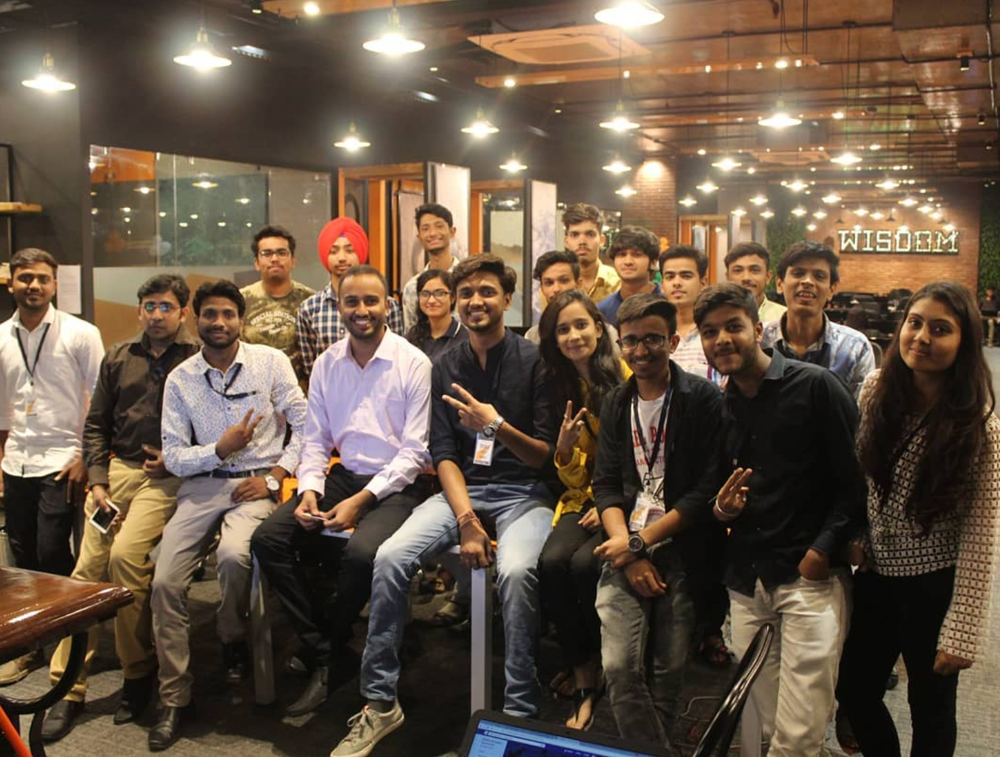

Written by Om Javia | October 01, 2024
INDORE
Visit Our Website Coding Sharks | Bhawarkuva Road
Creating a brand tone of voice isn’t as easy as putting pen to paper. Whether you’re an entrepreneur, a small
business owner or a copywriter, nailing your brand’s tone of voice is imperative if you want your target
audience to trust you and engage with your messaging.
If you get the tone wrong, your audience won’t believe in your brand values, they may not understand your
humor or worse, be offended by it!
By following key steps, businesses can develop a tone that reflects their values, builds trust, and
strengthens brand identity across all communication channels.
A brand’s tone of voice refers to how its personality and values are communicated to its audience. It’s important because it shapes how customers perceive a brand, creates an emotional connection between a brand and its audience, and ensures brand consistency across all platforms, helping to build trust and loyalty. You can read more about increasing customer loyalty here .
About Coding Shark
Coding Shark is a highly experienced coaching service for learners. They have a deep passion for delivering quality education and empowering individuals to excel in programming.
5 Ways to Leverage Customer Reviews to Increase Sales
Brand Authenticity: How User-Generated Content Can Give You a Much-Needed Boost
5 Ways Personalization in eCommerce Can Enhance Customer Experience